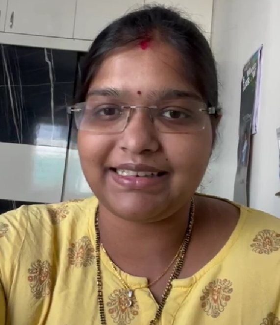

Sravya Kotha

Summary
I am hardworking and dedicated individual and has experience in teaching Math and CODING to kids.To secure a position in an organisation which enhances my knowledge and skills as a front end developer.
Education
- Master of Technology(Advanced Power Systems),JNTU,Kakinada(2012-2015),79%
- B.Tech,Vignan Institute of Engineering For Women,Visakhapatnam(2008-2012),76.65%
- Intermediate,Sri Prakash Junior College(2006-2008),93.7%
- SSC,Sri Prakash VidyaNiketan(2006),86.8%
Work Experience
Assistant Professor- TKR Engineering College
December 2015 - December 2016
- Worked as an assistant professor in Department of EEE
- Dealt various subjects such as PowerSystems,Basic Electrical and Electronics Engineering
- Dealt Electrical Laboratories like Control Systems and Simulation and Basic Electrical and Electronics Engineering
Part-Time MATH and CODING Tutor - Cuemath Pvt.Ltd
December 2019 - Still Working
- Working as Math and CODING Tutor since December 2019
- Dealt teaching block-based coding using scratch,code.org for kids
- Also taught app development using javascript through code.org
- In addition to this, Python was taught to higher grade kids
- Coming to Math I dealt with different boards of ICSE,CBSE,IB and so on..
Skills
- Enable to convey my subject to the students clearly
- Have knowledge in computer languages like C,Python,Javascript,HTML
- Curious to learn new things and go for challenges
- Hardworking and dedicated
Awards and Certifications
- Awarded as a Prime Tutor in Cuemath several times for higher retention rate
Others
- My hobbies are playing tennikoit,cooking,doing yoga
- Contact Me